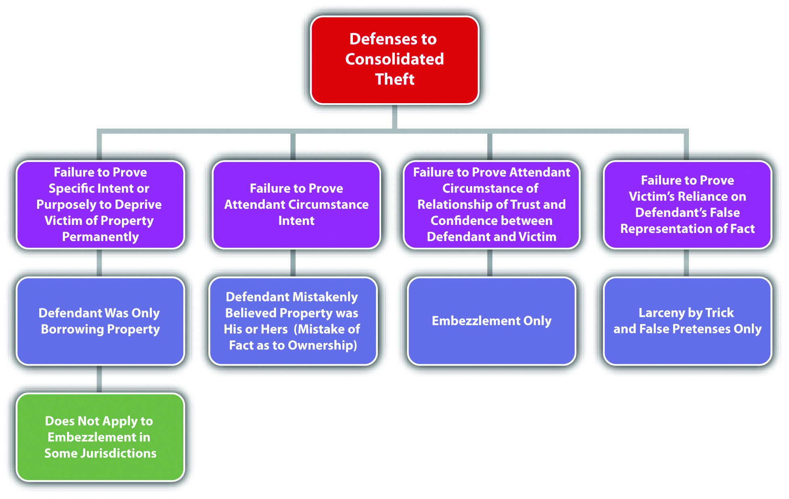
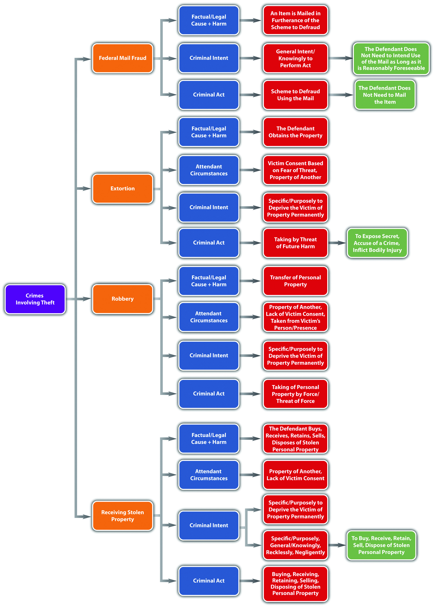
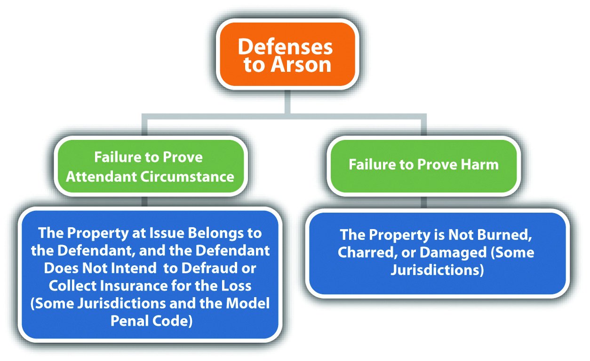
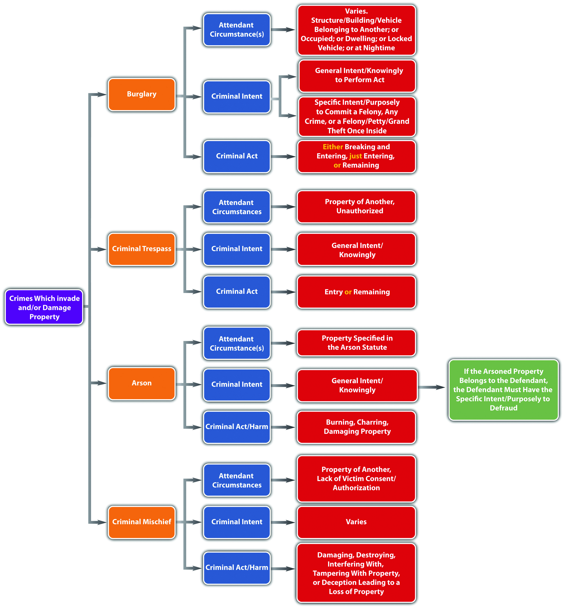

Source: Image courtesy of Jane F. Kardashian, MD.
Arson is one of the easiest crimes to commit on the spur of the moment…it takes only seconds to light a match to a pile of clothes or a curtain…
People v. Atkins, cited in Section 11 "Arson Intent"
Although crimes against the person such as murder and rape are considered extremely heinous, crimes against property can cause enormous loss, suffering, and even personal injury or death. In this section, you review different classifications of nonviolent theft crimes that are called white-collar crimesGenerally refers to nonviolent commercial theft. when they involve commercial theft. Upcoming sections analyze theft crimes that involve force or threat, receiving stolen property, and crimes that invade or damage property, such as burglary and arson. Computer crimes including hacking, identity theft, and intellectual property infringement are explored in an exercise at the end of the chapter.
Historically, nonviolent theft was broken down into three categories: larcenyTheft of personal property by a physical taking., embezzlementTheft of real or personal property by conversion., and false pretensesTheft of real property, personal property, or services by a false representation of fact.. The categories differ in the type of property that can be stolen and the method of stealing. Modern jurisdictions combine all three categories of nonviolent theft into one consolidated theft statuteA statute that criminalizes theft by larceny, embezzlement, and false pretenses., with a uniform grading system largely dependent on the value of the stolen property. The Model Penal Code consolidates all nonviolent theft offenses, including receiving stolen property and extortion, under one grading system (Model Penal Code § 223.1). What follows is a discussion of theft as defined in modern consolidated theft statutes, making note of the traditional distinctions among the various theft categories when appropriate. Theft has the elements of criminal act, criminal intent, attendant circumstances, causation, and harm, as is discussed in this chapter.
The criminal act element required under consolidated theft statutes is stealing real propertyLand and anything permanently attached to it., personal propertyMovable objects., or services. Real property is land and anything permanently attached to land, like a building. Personal property is any movable item. Personal property can be tangible propertyProperty that can be touched or held., like money, jewelry, vehicles, electronics, cellular telephones, and clothing. Personal property can also be intangible propertyProperty that has value but cannot be touched or held, for example, stocks and bonds., which means it has value, but it cannot be touched or held, like stocks and bonds. The Model Penal Code criminalizes theft by unlawful taking of movable property, theft by deception, theft of services, and theft by failure to make required disposition of funds received under one consolidated grading provision (Model Penal Code §§ 223.1, 223.2, 223.3, 223.7, 223.8).
The act of stealing can be carried out in more than one way. When the defendant steals by a physical taking, the theft is generally a larceny theft. The act of taking is twofold. First, the defendant must gain control over the item. Then the defendant must move the item, which is called asportation, as it is with kidnapping.Britt v. Commonwealth, 667 S.E.2d 763 (2008), accessed March 8, 2011, http://scholar.google.com/scholar_case?case=2834311189194937383&q= larceny+asportation&hl=en&as_sdt=2,5&as_ylo=1999. Although asportation for kidnapping must be a certain distance in many jurisdictions, the asportation for larceny can be any distance—even the slightest motion is sufficient.Britt v. Commonwealth, 667 S.E.2d 763 (2008), accessed March 8, 2011, http://scholar.google.com/scholar_case?case=2834311189194937383&q= larceny+asportation&hl=en&as_sdt=2,5&as_ylo=1999. Control plus asportation can be accomplished by the defendant’s physical act or by deceiving the victim into transferring the property with a false representation of fact. This is called larceny by trickTheft committed by a false representation of fact that results in the defendant’s possession of the stolen personal property.. Because larceny requires a physical taking, it generally only pertains to personal property.
Another way for a defendant to steal property is to convert it to the defendant’s use or ownership. Conversion generally occurs when the victim transfers possession of the property to the defendant, and the defendant thereafter appropriates the property transferred. When the defendant steals by conversion, the theft is generally an embezzlement theft.Commonwealth v. Mills, 436 Mass. 387 (2002), accessed March 7, 2011, http://scholar.google.com/scholar_case?case=14428947695245966729&q= larceny+false+pretenses+embezzlement&hl=en&as_sdt=2,5&as_ylo=1997. Embezzlement could occur when the defendant gains possession of property from a friendship or a family relationship or from a paid relationship such as employer-employee or attorney-client. Embezzlement does not require a physical taking, so it can pertain to real or personal property.
When the defendant steals by a false representation of fact, and the subject of the theft is a service, the theft is generally a false pretenses theft.Cal. Penal Code § 484(a), accessed March 8, 2011, http://law.onecle.com/california/penal/484.html. False pretenses can also be used to steal personal or real property and is very similar to larceny by trick in this regard. What differentiates false pretenses from larceny by trick is the status of the property after it is stolen, which is discussed under the harm element of consolidated theft statutes.
To summarize, whether the defendant steals by a physical taking, a conversion, or a false representation of fact, and whether the defendant steals real or personal property or a service, the crime is theft under modern consolidated theft statutes and is graded primarily on the value of the property or service stolen.
Jeremy stops by the local convenience store on his way to work and buys some cigarettes. Before paying for the cigarettes, Jeremy slips a package of chewing gum into his pocket and does not pay for it. Jeremy continues walking to his job at a local gas station. When one of the customers buys gas, Jeremy only rings him up for half of the amount purchased. Once the gas station closes, Jeremy takes the other half out of the cash register and puts it in his pocket with the chewing gum. After work, Jeremy decides to have a drink at a nearby bar. While enjoying his drink, he meets a patron named Chuck, who is a taxi driver. Chuck mentions that his taxi needs a tune-up. Jeremy offers to take Chuck back to the gas station and do the tune-up in exchange for a taxi ride home. Chuck eagerly agrees. The two drive to the gas station, and Jeremy suggests that Chuck take a walk around the block while he performs the tune-up. While Chuck is gone, Jeremy lifts the hood of the taxi and then proceeds to read a magazine. When Chuck returns twenty-five minutes later, Jeremy tells him the tune-up is complete. Chuck thereafter drives Jeremy home for free.
In this scenario, Jeremy has performed three separate acts of theft. When Jeremy slips the package of chewing gum into his pocket without paying for it, he has physically taken personal property, which is a larceny theft. When Jeremy fails to ring up the entire sale for a customer and pockets the rest from the cash register, he has converted the owner of the gas station’s cash for his own use, which is an embezzlement theft. When Jeremy falsely represents to Chuck that he has performed a tune-up of Chuck’s taxi and receives a free taxi ride in payment, he has falsely represented a fact in exchange for a service, which is a false pretenses theft. All three of these acts of theft could be prosecuted under one consolidated theft statute. The three stolen items have a relatively low value, so these crimes would probably be graded as a misdemeanor. Grading of theft under consolidated theft statutes is discussed shortly.
Figure 11.1 Diagram of Consolidated Theft Act

The criminal intent element required under consolidated theft statutes is either specific intent or purposely, or general intent or knowingly to perform the criminal act, depending on the jurisdiction. The Model Penal Code requires purposeful intent for theft by unlawful taking, deception, theft of services, and theft by failure to make required disposition of funds received (Model Penal Code §§ 223.2, 223.3, 223.7, 223.8).
When the criminal intent is specific or purposely, the defendant must intend the criminal act of stealing and must also intend to keep the stolen property.Itin v. Ungar, 17 P.3d 129 (2000), accessed March 8, 2011, http://scholar.google.com/scholar_case?case=12387802565107699365&q=theft+requires+ specific+intent+to+permanently+deprive&hl=en&as_sdt=2,5&as_ylo=1999. This could create a potential failure of proof or affirmative defense that the defendant was only “borrowing” property and intended to return it after use. In some jurisdictions, specific or purposeful intent to keep the property does not apply to embezzlement theft under the traditional definition.In the Matter of Schwimmer, 108 P.3d 761 (2005), accessed March 8, 2011, http://scholar.google.com/scholar_case?case=637183228950627584&q= embezzlement+borrowing+%22no+intent+to+permanently+deprive%22&hl= en&as_sdt=2,5&as_ylo=1999. Thus in these jurisdictions, a defendant who embezzles property and later replaces it cannot use this replacement as a defense.
Jorge goes to the nursery and spends hundreds of dollars on plants for his garden. Some of the plants are delicate and must be put into the ground immediately after purchase. When Jorge gets home, he discovers that he has no shovel because he loaned it to his brother-in-law a few weeks ago. He notices that his neighbor’s shovel is leaning against his neighbor’s garage. If Jorge borrows his neighbor’s shovel so that he can get his expensive plants into the ground, this appropriation would probably not constitute the crime of theft under a consolidated theft statute in certain jurisdictions. Jorge had the intent to perform the theft act of taking personal property. However, Jorge did not have the specific or purposeful intent to deprive his neighbor of the shovel permanently, which is often required for larceny theft. Thus in this scenario, Jorge may not be charged with and convicted of a consolidated theft offense.
Review the example with Jeremy given in Section 11 "Example of Consolidated Theft Act". Change this example and assume when Jeremy charged his customer for half of the sale and later pocketed fifty dollars from the cash register, his intent was to borrow this fifty dollars to drink at the bar and replace the fifty dollars the next day when he got paid. Jeremy probably has the criminal intent required for theft under a consolidated theft statute in many jurisdictions. Although Jeremy did not have the specific or purposeful intent to permanently deprive the gas station owner of fifty dollars, this is not generally required with embezzlement theft, which is the type of theft Jeremy committed. Jeremy had the intent to convert the fifty dollars to his own use, so the fact that the conversion was only a temporary deprivation may not operate as a defense, and Jeremy may be charged with and convicted of theft under a consolidated theft statute.
Figure 11.2 Crack the Code

As stated previously, the taking in both larceny by trick and false pretenses occurs when the defendant makes a false representation of fact that induces the victim to transfer the property or services. In many jurisdictions, the defendant must have general intent or knowledge that the representation of fact is false and must make the false representation with the specific intent or purposely to deceive.People v. Lueth, 660 N.W.2d 322 (2002), accessed March 9, 2011, http://scholar.google.com/scholar_case?case=16580779180424536816&q= false+pretenses+knowledge+statement+is+false+intent+to+deceive&hl= en&as_sdt=2,5&as_ylo=1999. The Model Penal Code criminalizes theft by deception when a defendant purposely “creates or reinforces a false impression, including false impressions as to law, value, intention or other state of mind” (Model Penal Code § 223.3(1)).
Review the example with Jeremy in Section 11 "Example of Consolidated Theft Act". In this example, Jeremy told Chuck that he performed a tune-up of Chuck’s taxi, when actually he just lifted the hood of the taxi and read a magazine. Because Jeremy knew the representation was false, and made the representation with the intent to deceive Chuck into providing him with a free taxi ride home, Jeremy probably has the appropriate intent for theft of a service by false pretenses, and he may be subject to prosecution for and conviction of this offense under a consolidated theft statute.
All theft requires the attendant circumstance that the property stolen is the property of another.Alaska Stat. § 11.46.100, accessed March 8, 2011, http://law.justia.com/codes/alaska/2009/title-11/chapter-11-46/article-01/sec-11-46-100. The criminal intent element for theft must support this attendant circumstance element. Thus mistake of fact or law as to the ownership of the property stolen could operate as a failure of proof or affirmative defense to theft under consolidated theft statutes in many jurisdictions.Haw. Rev. Stat. § 708-834, accessed March 8, 2011, http://law.justia.com/codes/hawaii/2009/volume-14/title-37/chapter-708/hrs-0708-0834-htm. The Model Penal Code provides an affirmative defense to prosecution for theft when the defendant “is unaware that the property or service was that of another” (Model Penal Code § 223.1(3) (a)).
Review the example of a case lacking consolidated theft intent given in Section 11 "Example of a Case Lacking Consolidated Theft Intent". Change this example so that Jorge arrives home from the nursery and begins frantically searching for his shovel in his toolshed. When he fails to locate it, he emerges from the shed and notices the shovel leaning against his neighbor’s garage. Jorge retrieves the shovel, uses it to put his plants into the ground, and then puts it into his toolshed and locks the door. If the shovel Jorge appropriated is actually his neighbor’s shovel, which is an exact replica of Jorge’s, Jorge may be able to use mistake of fact as a defense to theft under a consolidated theft statute. Jorge took the shovel, but he mistakenly believed that it was his, not the property of another. Thus the criminal intent for the attendant circumstance of victim ownership is lacking, and Jorge probably will not be charged with and convicted of theft under a consolidated theft statute.
Theft under a consolidated theft statute also typically requires the attendant circumstance element of lack of victim consent.Tex. Penal Code § 31.03(b) (1), accessed March 8, 2011, http://law.justia.com/codes/texas/2009/penal-code/title-7-offenses-against-property/chapter-31-theft. Thus victim consent to the taking or conversion may operate as a failure of proof or affirmative defense in many jurisdictions. Keep in mind that all the rules of consent discussed in Chapter 5 "Criminal Defenses, Part 1" and Chapter 10 "Sex Offenses and Crimes Involving Force, Fear, and Physical Restraint" apply. Thus consent obtained fraudulently, as in larceny by trick or false pretenses, is not valid and effective and cannot form the basis of a consent defense.
Review the example given in Section 11 "Example of Consolidated Theft Act" with Jeremy. Change the example so that the owner of the gas station is Jeremy’s best friend Cody. Cody tells Jeremy several times that if he is ever short of cash, he can simply take some cash from the register, as long as it is not more than fifty dollars. Assume that on the date in question, Jeremy did not ring up half of a sale but simply took fifty dollars from the register because he was short on cash, and he needed money to order drinks at the bar. In this case, Jeremy may have a valid defense of victim’s consent to any charge of theft under a consolidated theft statute.
In many jurisdictions, embezzlement theft under a consolidated theft statute requires the attendant circumstance element of a relationship of trust and confidence between the victim and the defendant.Commonwealth v. Mills, 436 Mass. 387 (2002), accessed March 7, 2011, http://scholar.google.com/scholar_case?case=14428947695245966729&q= larceny+false+pretenses+embezzlement&hl=en&as_sdt=2,5&as_ylo=1997. This relationship is generally present in an employer-employee relationship, a friendship, or a relationship where the defendant is paid to care for the victim’s property. However, if the attendant circumstance element of trust and confidence is lacking, the defendant will not be subject to prosecution for embezzlement under a consolidated theft statute in many jurisdictions.
Tran sells an automobile to Lee. Tran’s automobile has personalized license plates, so he offers to apply for new license plates and thereafter send them to Lee. Lee agrees and pays Tran for half of the automobile, the second payment to be made in a week. Lee is allowed to take possession of the automobile and drives it to her home that is over one hundred miles away. Tran never receives the second payment from Lee. When the new license plates arrive, Tran phones Lee and tells her he is going to keep them until Lee makes her second payment. In some jurisdictions, Tran has not embezzled the license plates. Although Tran and Lee have a relationship, it is not a relationship based on trust or confidence. Tran and Lee have what is called a debtor-creditor relationship (Lee is the debtor and Tran is the creditor). Thus if the jurisdiction in which Tran sold the car requires a special confidential relationship for embezzlement, Tran may not be subject to prosecution for this offense.
A false pretenses or larceny by trick theft under a consolidated theft statute requires the additional attendant circumstance element of victim reliance on the false representation of fact made by the defendant.People v. Lueth, 660 N.W.2d 332 (2002), accessed March 9, 2011, http://scholar.google.com/scholar_case?case=16580779180424536816&q= false+pretenses+knowledge+statement+is+false+intent+to+deceive&hl= en&as_sdt=2,5&as_ylo=1999. Thus a victim’s knowledge that the statement is false could operate as a failure of proof or affirmative defense in many jurisdictions.
Review the example with Jeremy and Chuck in Section 11 "Example of Consolidated Theft Act". Change the example so that Chuck does not walk around the block as Jeremy asked him to do. Instead, Chuck walks around the corner and then spies on Jeremy while he reads a magazine with the hood open. Chuck takes out his phone and makes a videotape of Jeremy. After twenty-five minutes, Chuck walks back over to Jeremy and thereafter gives Jeremy the free taxi ride home. When they arrive at Jeremy’s house, Chuck shows Jeremy the videotape and threatens to turn it over to the district attorney if Jeremy does not pay him two hundred dollars. In this case, Jeremy probably has a valid defense to false pretenses theft. Chuck, the “victim,” did not rely on Jeremy’s false representation of fact. Thus the attendant circumstance element of false pretenses is lacking and Jeremy may not be subject to prosecution for and conviction of this offense. Keep in mind that this is a false pretenses scenario because Chuck gave Jeremy a service, and larceny by trick only applies to personal property. Also note that Chuck’s action in threatening Jeremy so that Jeremy will pay him two hundred dollars may be the criminal act element of extortion, which is discussed shortly.
Figure 11.3 Diagram of Defenses to Consolidated Theft
The criminal act must be the factual and legal cause of the consolidated theft harm, which is defined in Section 11 "Consolidated Theft Harm".
Consolidated theft is a crime that always includes bad results or harm, which is the victim’s temporary or permanent loss of property or services, no matter how slight the value. In the case of theft by false pretenses and larceny by trick, in some jurisdictions, the status of the property after it has been stolen determines which crime was committed. If the defendant becomes the owner of the stolen property, the crime is a false pretenses theft.People v. Curtin, 22 Cal. App. 4th 528 (1994), accessed March 10, 2011, http://scholar.google.com/scholar_case?case=3765672039191216315&q= false+pretenses+theft+of+a+service&hl=en&as_sdt=2,5&as_ylo=1999. If the defendant is merely in possession of the stolen property, the crime is larceny by trick.People v. Beaver, 186 Cal. App. 4th 107 (2010), accessed March 10, 2011, http://scholar.google.com/scholar_case?case=12194560873043980150&q= false+pretenses+theft+of+a+service&hl=en&as_sdt=2,5&as_ylo=1999. When the stolen property is money, the crime is false pretenses theft because the possessor of money is generally the owner.People v. Curtin, 22 Cal. App. 4th 528 (1994), accessed March 10, 2011, http://scholar.google.com/scholar_case?case=3765672039191216315&q= false+pretenses+theft+of+a+service&hl=en&as_sdt=2,5&as_ylo=1999.
Review the example given in Section 11 "Example of a Case Lacking Embezzlement Attendant Circumstance" with Tran and Lee. In this example, Lee paid Tran half of the money she owed him for his vehicle, with a promise to pay the remainder in one week. Assume that Lee never intended to pay the second installment when she made the deal with Tran. Tran signs the ownership documents over to Lee, promises to send Lee the license plates when they arrive, and watches as Lee drives off, never to be seen again. In this example, Lee has most likely committed false pretenses theft, rather than larceny by trick. Lee made a false representation of fact with the intent to deceive and received a vehicle for half price in exchange. The vehicle belongs to Lee, and the ownership documents are in her name. Thus Lee has ownership of the stolen vehicle rather than possession, and the appropriate offense is false pretenses theft.
Jacob, a car thief, runs up to Nanette, who is sitting in her Mercedes with the engine running. Jacob tells Nanette he is a law enforcement officer and needs to take control of her vehicle to pursue a fleeing felon. Nanette skeptically asks Jacob for identification. Jacob pulls out a phony police badge and says, “Madam, I hate to be rude, but if you don’t let me drive your vehicle, a serial killer will be roaming the streets looking for victims!” Nanette grudgingly gets out of the car and lets Jacob drive off, never to be seen again. In this example, Jacob has obtained the Mercedes, but the ownership documents are still in Nanette’s name. Thus Jacob has possession of the stolen vehicle rather than ownership, and the appropriate offense is larceny by trick.
Grading under consolidated theft statutes depends primarily on the value of the stolen property. Theft can be graded by degreesConnecticut Jury Instructions §§ 53a-119, 53a-122 through 53a-125b, accessed March 10, 2011, http://www.jud.ct.gov/JI/criminal/part9/9.1-1.htm. or as petty theftTheft of low-value property., which is theft of property with low value, and grand theftTheft of high-value property., which is theft of property with significant value.Cal. Penal Code § 486, accessed March 10, 2011, http://law.onecle.com/california/penal/486.html. Petty theft or theft of the second or third degree is generally a misdemeanor, while grand theft or theft of the first degree is generally a felony, felony-misdemeanor, or gross misdemeanor, depending on the amount stolen or whether the item stolen is a firearm.Cal. Penal Code § 489, accessed March 10, 2011, http://law.onecle.com/california/penal/489.html. The Model Penal Code grades theft as a felony of the third degree if the amount stolen exceeds five hundred dollars or if the property stolen is a firearm, automobile, airplane, motorcycle, or other motor-propelled vehicle (Model Penal Code § 223.1(2)). The Model Penal Code grades all other theft as a misdemeanor or petty misdemeanor (Model Penal Code § 223.1(2)). When determining the value of property for theft, in many jurisdictions, the value is market value, and items can be aggregated if they were stolen as part of a single course of conduct.Connecticut Jury Instructions §§ 53a-119, 53a-122 through 53a-125b, accessed March 10, 2011, http://www.jud.ct.gov/JI/criminal/part9/9.1-1.htm. The Model Penal Code provides that “[t]he amount involved in a theft shall be deemed to be the highest value, by any reasonable standard…[a]mounts involved in thefts committed pursuant to one scheme or course of conduct, whether from the same person or several persons, may be aggregated in determining the grade or the offense” (Model Penal Code § 223.1(2) (c)).
Table 11.1 Comparing Larceny, Larceny by Trick, False Pretenses, and Embezzlement
| Crime | Criminal Act | Type of Property | Criminal Intent | Attendant Circumstance | Harm |
|---|---|---|---|---|---|
| Larceny | Taking control plus asportation | Personal | Specific or purposely to deprive victim permanently* | Victim’s property (applies to all four theft crimes), lack of victim consent | Property loss |
| Larceny by trick | Taking by a false representation of fact | Personal | Specific or purposely to deceive* | Victim reliance on false representation | Victim loses possession of property |
| False pretenses | Taking by a false representation of fact | Personal, real, services | Specific or purposely to deceive* | Victim reliance on false representation | Victim loses ownership of property |
| Embezzlement | Conversion | Personal, real | Specific or purposely to deprive victim temporarily or permanently* | Relationship of trust and confidence between defendant and victim (some jurisdictions) | Property loss either temporary or permanent |
| *Some jurisdictions include general intent or knowingly to commit the criminal act. | |||||
| Note: Grading under consolidated theft statutes is based primarily on property value; market value is the standard, and property can be aggregated if stolen in a single course of conduct. | |||||
The federal government criminalizes theft by use of the federal postal service as federal mail fraudA scheme to defraud that utilizes the US Postal Service., a felony.18 U.S.C. § 1341, accessed March 18, 2011, http://www.law.cornell.edu/uscode/18/usc_sec_18_00001341----000-.html. Like every federal offense, federal mail fraud is criminal in all fifty states. In addition, a defendant can be prosecuted by the federal and state government for one act of theft without violating the double jeopardy protection in the Fifth Amendment of the federal Constitution.
The criminal act element required for federal mail fraud is perpetrating a “scheme to defraud” using the US mail.18 U.S.C. § 1341, accessed March 18, 2011, http://www.law.cornell.edu/uscode/18/usc_sec_18_00001341----000-.html. Scheme has been given a broad interpretation and includes “everything designed to defraud by representations as to the past or present, or suggestions and promises as to the future.”Durland v. U.S., 161 U.S. 306, 313 (1896), http://supreme.justia.com/us/161/306. Even one act of mailing is sufficient to subject the defendant to a criminal prosecution for this offense.U.S. v. McClelland, 868 F.2d 704 (1989), accessed March 18, 2011, http://scholar.google.com/scholar_case?case=8428034080210339517&q= federal+mail+fraud+%22one+letter%22&hl=en&as_sdt=2,5&as_ylo=2000. In addition, the defendant does not need to actually mail anything himself or herself.U.S. v. McClelland, 868 F.2d 704 (1989), accessed March 18, 2011, http://scholar.google.com/scholar_case?case=8428034080210339517&q= federal+mail+fraud+%22one+letter%22&hl=en&as_sdt=2,5&as_ylo=2000. The criminal intent element required for federal mail fraud is general intent or knowingly or awareness that the mail will be used to further the scheme.U.S. v. McClelland, 868 F.2d 704 (1989), accessed March 18, 2011, http://scholar.google.com/scholar_case?case=8428034080210339517&q= federal+mail+fraud+%22one+letter%22&hl=en&as_sdt=2,5&as_ylo=2000. The defendant does not have to intend that the US Mail will be used to commit the theft, as long as use of the postal service is reasonably foreseeable in the ordinary course of business.U.S. v. McClelland, 868 F.2d 704 (1989), accessed March 18, 2011, http://scholar.google.com/scholar_case?case=8428034080210339517&q= federal+mail+fraud+%22one+letter%22&hl=en&as_sdt=2,5&as_ylo=2000. The defendant’s criminal act, supported by the appropriate intent, must be the factual and legal cause of the harm, which is the placement of anything in any post office or depository to be sent by the US Postal Service in furtherance of the scheme to defraud.18 U.S.C. § 1341, accessed March 18, 2011, http://www.law.cornell.edu/uscode/18/usc_sec_18_00001341----000-.html.
The Mail Fraud Act has been used to punish a wide variety of schemes, including Ponzi schemesA scheme where the defendant appropriates investments unlawfully and pays investors by using money from new investors., like the recent high-profile Bernie Madoff case.Constance Parten, “After Madoff: Notable Ponzi Schemes,” CNBC website, accessed March 11, 2011, http://www.cnbc.com/id/41722418/After_Madoff_Most_Notable_Ponzi_Scams. In a Ponzi scheme, the defendant informs investors that their investment is being used to purchase real estate, stocks, or bonds, when, in actuality, the money is appropriated by the defendant and used to pay earlier investors. Eventually this leads to a collapse that divests all investors of their investment.
Federal statutes also punish bank fraud,18 U.S.C. § 1344, accessed March 11, 2011, http://www.law.cornell.edu/uscode/18/usc_sec_18_00001344----000-.html. health care fraud,18 U.S.C. § 1347, accessed March 11, 2011, http://www.law.cornell.edu/uscode/18/usc_sec_18_00001347----000-.html. securities fraud,18 U.S.C. § 1348, accessed March 11, 2011, http://www.law.cornell.edu/uscode/18/usc_sec_18_00001348----000-.html. and fraud in foreign labor contracting.18 U.S.C. § 1351, accessed March 11, 2011, http://www.law.cornell.edu/uscode/18/usc_sec_18_00001351----000-.html. Fraud committed by wire, television, and radio also is federally criminalized.18 U.S.C. § 1343, accessed March 11, 2011, http://www.law.cornell.edu/uscode/18/usc_sec_18_00001343----000-.html.
Bernard Madoff $50 Billion Ponzi Scheme: How Did He Do It?
The facts behind Bernie Madoff’s Ponzi scheme are explained in this video:
All theft generally requires the attendant circumstances that the property stolen is the property of another, and victim consent to the taking, conversion, or transfer of ownership is lacking.
Answer the following questions. Check your answers using the answer key at the end of the chapter.
All states and the federal government criminalize extortionTheft by a threat of future harm., which is also called blackmail.K.S.A. § 21-3428, accessed March 18, 2011, http://kansasstatutes.lesterama.org/Chapter_21/Article_34/21-3428.html. As stated previously, the Model Penal Code criminalizes theft by extortion and grades it the same as all other nonforcible theft offenses (Model Penal Code § 223.4). Extortion is typically nonviolent, but the elements of extortion are very similar to robbery, which is considered a forcible theft offense. Robbery is discussed shortly.
Extortion has the elements of criminal act, criminal intent, attendant circumstances, causation, and harm, as is explored in Section 11.2.1 "Extortion".
The criminal act element required for extortion is typically the theft of property accomplished by a threat to cause future harm to the victim, including the threat to inflict bodily injury, accuse anyone of committing a crime, or reveal a secret that would expose the victim to hatred, contempt, or ridicule.Ga. Code § 16-8-16, accessed March 11, 2011, http://law.onecle.com/georgia/16/16-8-16.html. The Model Penal Code criminalizes theft by extortion when the defendant obtains property of another by threatening to inflict bodily injury on anyone, commit any criminal offense, accuse anyone of a criminal offense, expose any secret tending to subject any person to hatred, contempt, or ridicule or impair his credit and business repute, take or withhold action as an official, bring about a strike or boycott, testify with respect to another’s legal claim, or inflict any other harm that would not benefit the actor (Model Penal Code § 223.4). Note that some of these acts could be legal, as long as they are not performed with the unlawful intent to steal.
Rodney tells Lindsey that he will report her illegal drug trafficking to local law enforcement if she does not pay him fifteen thousand dollars. Rodney has probably committed the criminal act element required for extortion in most jurisdictions. Note that Rodney’s threat to expose Lindsey’s illegal activities is actually desirable behavior when performed with the intent to eliminate or reduce crime. However, under these circumstances, Rodney’s act is most likely criminal because it is supported by the intent to steal fifteen thousand dollars from Lindsey.
The criminal intent element required for extortion is typically the specific intent or purposely to commit the criminal act and to unlawfully deprive the victim of property permanently.Connecticut Criminal Jury Instructions §§53a-119(5) and 53a-122(a) (1), accessed March 12, 2011, http://www.jud.ct.gov/ji/criminal/part9/9.1-11.htm. This intent requirement is similar to the criminal intent element required for larceny and false pretenses theft, as discussed in Section 11 "Consolidated Theft Intent". Some jurisdictions only require general intent or knowingly to perform the criminal act.Ariz. Rev. Stat. § 13-1804, http://law.onecle.com/arizona/criminal-code/13-1804.html.
Review the example with Rodney and Lindsey in Section 11 "Example of Extortion Act". Change the example and assume that Rodney asks Lindsey to loan him the fifteen thousand dollars so that he can make a balloon payment due on his mortgage. Lindsey refuses. Rodney thereafter threatens to expose Lindsey’s drug trafficking if she doesn’t loan him the money. In many jurisdictions, Rodney may not have the criminal intent element required for extortion. Although Rodney performed the criminal act of threatening to report Lindsey for a crime, he did so with the intent to borrow money from Lindsey. Thus Rodney did not act with the specific intent or purposely to permanently deprive Lindsey of property, which could operate as a failure of proof or affirmative defense to extortion in many jurisdictions.
Extortion is a form of theft, so it has the same attendant circumstance required in consolidated theft statutes—the property stolen belongs to another. In many jurisdictions, it is an affirmative defense to extortion that the property taken by threat to expose a secret or accuse anyone of a criminal offense is taken honestly, as compensation for property, or restitution or indemnification for harm done by the secret or crime.Ga. Code § 16-8-16, accessed March 11, 2011, http://law.onecle.com/georgia/16/16-8-16.html. The Model Penal Code provides an affirmative defense to extortion by threat of accusation of a criminal offense, exposure of a secret, or threat to take or withhold action as an official if the property obtained was “honestly claimed as restitution or indemnification for harm done in the circumstances to which such accusation, exposure, lawsuit or other official action relates, or as compensation for property or lawful services” (Model Penal Code § 223.4).
Tara, a real estate broker, hires Trent to be a real estate sales agent in her small realty office. Tara decides she wants to get the property listing of a competitor by using Trent to obtain information. Tara tells Trent to pretend he is a buyer interested in the property. She asks him to make an appointment with the competitor, ask a lot of questions about the owner of the property, and thereafter bring Tara the information. Tara promises to pay Trent one thousand dollars for his time and effort. Trent spends several hours performing this task and thereafter demands his one thousand dollars payment. Tara tells Trent she is experiencing “tough times” and can’t afford to pay him. Trent threatens to tell Tara’s competitor what she is up to if she doesn’t pay him the one thousand dollars. Trent has probably not committed extortion in many jurisdictions. Although Trent threatened to expose Tara’s secret if she didn’t pay him one thousand dollars, Trent honestly believed he was owed this money for a job he performed that was directly related to the secret. Thus in many jurisdictions, Trent has an affirmative defense that the money demanded was compensation for services and not the subject of unlawful theft by extortion.
Extortion also requires the attendant circumstance of victim consent. With extortion, the victim consensually transfers the property based on fear inspired by the defendant’s threat.Oklahoma Uniform Jury Instructions No. CR 5-34, accessed March 12, 2011, http://www.okcca.net/online/oujis/oujisrvr.jsp?oc=OUJI-CR%205-34.
Review the example with Rodney and Lindsey in Section 11 "Example of Extortion Act". Assume that Lindsey grudgingly gives Rodney the fifteen thousand dollars so that he will not report her drug trafficking. In this example, Lindsey is consensually transferring the money to Rodney to prevent him from making good on his threat. Thus the attendant circumstance of victim consent based on fear is most likely present, and Rodney could be subject to prosecution for and conviction of extortion in most jurisdictions.
The criminal act must be the factual and legal cause of extortion harm, which is defined in Section 11 "Extortion Harm".
The defendant must obtain property belonging to another for the completed crime of extortion in most jurisdictions.Oklahoma Uniform Jury Instructions No. CR 5-34, accessed March 12, 2011, http://www.okcca.net/online/oujis/oujisrvr.jsp?oc=OUJI-CR%205-34. If the defendant commits the criminal act of threatening the victim with the appropriate criminal intent, but the victim does not actually transfer the property to the defendant, the defendant can only be charged with attempted extortion.Oklahoma Uniform Jury Instructions No. CR 5-32, accessed March 12, 2011, http://www.okcca.net/online/oujis/oujisrvr.jsp?oc=OUJI-CR%205-32.
Review the example with Rodney and Lindsey in Section 11 "Example of Extortion Act". Assume that after Rodney threatens to report Lindsey’s drug trafficking to local law enforcement, Lindsey calls local law enforcement, turns herself in for drug trafficking, and also reports Rodney for making the threat. In this case, because Rodney did not “obtain” property by threat, the crime of extortion is not complete, and attempted extortion would be the appropriate charge in most jurisdictions.
Figure 11.4 Diagram of Defenses to Extortion

Extortion is generally graded as a felony in most jurisdictions.Or. Rev. Stat. § 164.075, accessed March 12, 2011, http://law.onecle.com/oregon/164-offenses-against-property/164.075.html. As stated previously, the Model Penal Code grades extortion under its consolidated theft offense.
RobberyTheft by force or threat of imminent force. was the first common-law theft crime. The criminalization of robbery was a natural progression from other common-law crimes against the person because robbery always involves force, violence, or threat and could pose a risk of injury or death to the robbery victim, defendant, or other innocent bystanders. Recall from Chapter 9 "Criminal Homicide" that robbery is generally a serious felony that is included in most felony murder statutes as a predicate felony for first-degree felony murder. When robbery does not result in death, it is typically graded more severely than theft under a consolidated theft statute. Robbery grading is discussed shortly.
The elements of robbery are very similar to the elements of larceny and extortion. For the purpose of brevity, only the elements of robbery that are distinguishable from larceny and extortion are analyzed in depth. Robbery has the elements of criminal act, attendant circumstances, criminal intent, causation, and harm, as is explored in Section 11.2 "Extortion, Robbery, and Receiving Stolen Property".
It is the criminal act element that primarily distinguishes robbery from larceny and extortion. The criminal act element required for robbery is a taking of personal property by force or threat of force.Ind. Code § 35-42-5-1, accessed March 18, 2011, http://law.onecle.com/indiana/35/35-42-5-1.html. Force is generally physical force. The force can be slight, but it must be more than what is required to gain control over and move the property.S.W. v. State, 513 So. 2d 1088 (1987), accessed March 18, 2011, http://scholar.google.com/scholar_case?case=8956843531832075141&q= robbery+%22slight+force%22&hl=en&as_sdt=2,5. Many jurisdictions require force during the taking, which includes the use of force to prevent the victim from reclaiming the property, or during escape.State v. Handburgh, 830 P.2d 641 (1992), accessed March 18, 2011, http://scholar.google.com/scholar_case?case=2186457002998894202&q= State+v.+Handburgh&hl=en&as_sdt=2,5. The Model Penal Code requires force or threat “in the course of committing a theft” and defines this as occurring in “an attempt to commit theft or in flight after the attempt or commission” (Model Penal Code § 222.1(1)). Threat for robbery is a threat to inflict imminent force.Ala. Code § 13A-8-43, accessed March 18, 2011, http://law.onecle.com/alabama/criminal-code/13A-8-43.html.
While larceny and extortion also require a taking, the defendant typically accomplishes the larceny taking by stealth, or a false representation of fact. In extortion, the defendant accomplishes the taking by a threat of future harm that may or may not involve force.
Review the example given in Section 11 "Example of Extortion Act" with Rodney and Lindsey. In this example, Rodney threatened to expose Lindsey’s drug trafficking if she didn’t pay him fifteen thousand dollars. Change the example so that Rodney tells Lindsey he will kill her if she doesn’t write him a check for fifteen thousand dollars. Rodney exemplifies his threat by pointing to a bulge in his front jacket pocket that appears to be a weapon. In this scenario, Rodney has most likely committed the criminal act element required for robbery, not extortion. Rodney’s threat is a threat of immediate force. Compare this threat to Rodney’s threat to expose Lindsey’s drug trafficking, which is a threat of future harm that relates to Lindsey’s arrest for a crime, rather than force.
Peter, a jewelry thief, notices that Cheryl is wearing a diamond ring. Peter walks up to Cheryl and asks her if she wants him to read her palm. Cheryl shrugs her shoulders and says, “Sure! What have I got to lose?” While Peter does an elaborate palm reading, he surreptitiously slips Cheryl’s diamond ring off her finger and into his pocket. Peter has probably not committed the criminal act element required for robbery in this case. Although Peter used a certain amount of physical force to remove Cheryl’s ring, he did not use any force beyond what was required to gain control over Cheryl’s property and move it into his possession. Thus Peter has probably committed the criminal act element required for larceny theft, not robbery, and is subject to less severe sentencing for this lower-level offense.
Another difference between robbery and larceny or extortion is the attendant circumstances requirement(s). Robbery requires the same attendant circumstance required for both larceny and extortion—that the property taken belongs to another. It also has the same attendant circumstance as larceny—that the defendant accomplish the taking against the victim’s will and without consent. However, robbery has one additional attendant circumstance, which is that the property be taken from the victim’s person or presence.Cal. Penal Code § 211, accessed March 19, 2011, http://codes.lp.findlaw.com/cacode/PEN/3/1/8/4/s211. The property does not need to be in the actual physical possession of the victim, as long as it is under the victim’s control.Jones v. State, 652 So. 2d 346 (1995), accessed March 19, 2011, http://scholar.google.com/scholar_case?case=11856873917512077763&q= robbery+%22from+the+victim%27s+person%22&hl=en&as_sdt=2,5&as_ylo=2000. Thus if the victim could have prevented the taking if not for the force, violence, or threat posed by the defendant, this attendant circumstance is present.Jones v. State, 652 So. 2d 346 (1995), accessed March 19, 2011, http://scholar.google.com/scholar_case?case=11856873917512077763&q= robbery+%22from+the+victim%27s+person%22&hl=en&as_sdt=2,5&as_ylo=2000.
Review the example given in Section 11 "Example of Robbery Act" with Rodney and Lindsey. In this example, Rodney tells Lindsey he will kill her if she doesn’t write him a check for fifteen thousand dollars. Change this example so that Rodney knows Lindsey has recently withdrawn fifteen thousand dollars in cash from the bank. Rodney demands the cash, tells Lindsey he will kill her if she doesn’t give it to him, and gestures toward a bulge in his front jacket pocket that appears to be a weapon. Lindsey tells Rodney, “The money is in my purse, but if you take it, you will be ruining my life!” and points to her purse, which is on the kitchen table a few feet away. Rodney walks over to the table, opens Lindsey’s purse, and removes a large envelope stuffed with bills. In this scenario, the attendant circumstances for robbery appear to be present. Rodney took the property of another without consent. Although the money was not on Lindsey’s person, it was in her presence and subject to her control. If Rodney had not threatened Lindsey’s life, she could have prevented the taking. Thus Rodney has most likely committed robbery and is subject to prosecution for and conviction of this offense.
The criminal intent element required for robbery is the same as the criminal intent element required for larceny and extortion in many jurisdictions. The defendant must have the specific intent or purposely to commit the criminal act and to deprive the victim of the property permanently.Metheny v. State, 755 A.2d 1088 (2000), accessed March 19, 2011, http://scholar.google.com/scholar_case?case=10315203348655203542&q= robbery+%22deprive+permanently%22&hl=en&as_sdt=2,5. Some jurisdictions do not require the intent to permanently deprive the victim of property and include temporary takings in the robbery statute.Fla. Stat. Ann. § 812.13, accessed March 19, 2011, http://law.onecle.com/florida/crimes/812.13.html.
Review the example with Rodney and Lindsey in Section 11 "Example of a Case Lacking Extortion Intent". In this example, Rodney demands a loan from Lindsey in the amount of fifteen thousand dollars and threatens to expose her drug trafficking activities if she doesn’t comply. Change this example so that Rodney tells Lindsey to loan him fifteen thousand dollars or he will kill her, gesturing at a bulge in his front jacket pocket that appears to be a weapon. In a jurisdiction that requires the criminal intent to permanently deprive the victim of property for robbery, Rodney does not have the appropriate criminal intent. In a jurisdiction that allows for the intent to temporarily deprive the victim of property for robbery, Rodney has the appropriate criminal intent and may be charged with and convicted of this offense.
The criminal act supported by the criminal intent must be the factual and legal cause of the robbery harm, which is the same as the harm requirement for larceny and extortion: the property must be transferred to the defendant.Oklahoma Uniform Jury Instructions No. CR 4-141, accessed March 19, 2011, http://www.okcca.net/online/oujis/oujisrvr.jsp?o=248. In some jurisdictions, no transfer of property needs to take place, and the crime is complete when the defendant employs the force or threat with the appropriate criminal intent.Williams v. State, 91 S.W. 3d 54 (2002), accessed March 19, 2011, http://scholar.google.com/scholar_case?case=9518129765374420507&q= robbery+%22transfer+of+property%22&hl=en&as_sdt=2,5&as_ylo=2000.
Review the example with Rodney and Lindsey in Section 11 "Example of Robbery Attendant Circumstances". In this example, Rodney threatens to kill Lindsey if she does not give him fifteen thousand dollars out of her purse and gestures to a bulge in his front jacket pocket that appears to be a weapon. Change this example so that Lindsey leaps off of the couch and tackles Rodney after his threat. She reaches into his pocket and determines that Rodney’s “gun” is a plastic water pistol. Rodney manages to get out from under Lindsey and escapes. If Rodney and Lindsey are in a jurisdiction that requires a transfer of property for the harm element of robbery, Rodney has probably only committed attempted robbery because Rodney did not get the chance to take the money out of Lindsey’s purse. If Rodney and Lindsey are in a jurisdiction that does not require a transfer of property for the harm element of robbery, Rodney may be subject to prosecution for and conviction of this offense.
Figure 11.5 Diagram of Defenses to Robbery

As stated previously, robbery is generally graded as a serious felony that can serve as the predicate felony for first-degree felony murderCal. Penal Code § 189, accessed March 19, 2011, http://law.onecle.com/california/penal/189.html. and a strike in states that have three strikes statutes.Cal. Penal Code § 1192.7, accessed March 19, 2011, http://law.onecle.com/california/penal/1192.7.html. Robbery grading is aggravated by the use of a weapon or when the defendant inflicts serious bodily injury.Tex. Penal Code § 29.03, accessed March 12, 2011, http://law.onecle.com/texas/penal/29.03.00.html. The Model Penal Code grades robbery as a felony of the second degree, unless the actor attempts to kill anyone or purposely inflicts or attempts to inflict serious bodily injury, in which case it is graded as a felony of the first degree (Model Penal Code § 222.1(2)).
Table 11.2 Comparing Larceny, Extortion, and Robbery
| Crime | Criminal Act | Criminal Intent | Attendant Circumstance | Harm |
|---|---|---|---|---|
| Larceny | Taking by stealth or false representation of fact | Specific or purposely to deprive the victim of property permanently* | Victim’s property, lack of victim consent | Property transfer |
| Extortion | Taking by threat of future harm; not necessarily physical | Specific or purposely to deprive the victim of property permanently* | Victim’s property; the victim consents based on fear | Property transfer |
| Robbery | Taking by force or threat of imminent force | Specific or purposely to deprive the victim of property permanently* | Victim’s property, lack of victim consent, property is taken from the victim’s person or presence | Property transfer** |
| *In some jurisdictions, the defendant can intend a temporary taking. | ||||
| **In some jurisdictions, the victim does not need to transfer the property to the defendant. | ||||
All jurisdictions criminalize receiving stolen propertyReceiving, buying, retaining, selling, or disposing of stolen property., to deter theft and to break up organized criminal enterprises that benefit from stealing and selling stolen goods. Receiving stolen property criminal statutes often are targeted at pawnbrokers or fencesA defendant who facilitates the buying and selling of stolen property. who regularly buy and sell property that is the subject of one of the theft crimes discussed in the preceding sections. As stated, the Model Penal Code includes receiving stolen property in its consolidated theft offense (Model Penal Code §§ 223.1, 223.6). Receiving stolen property has the elements of criminal act, criminal intent, attendant circumstances, causation, and harm, as is explored in Section 11.2.3 "Receiving Stolen Property".
The criminal act element required for receiving stolen property in many jurisdictions is receiving, retaining, disposing of,Ala. Code § 13A-8-16, accessed March 12, 2011, http://law.onecle.com/alabama/criminal-code/13A-8-16.html. selling,Cal. Penal Code § 496, accessed March 12, 2011, http://law.onecle.com/california/penal/496.html. trafficking in,Fla. Stat. Ann. § 812.019, accessed March 12, 2011, http://law.onecle.com/florida/crimes/812.019.html. buying, or aiding in concealmentMass. Gen. Laws ch. 266 § 60, http://law.onecle.com/massachusetts/266/60.html. of stolen personal property. The Model Penal Code defines the criminal act element as receiving, retaining, or disposing of stolen movable property (Model Penal Code § 223.6(1)). The criminal act does not generally require the defendant to be in actual physical possession of the property, as long as the defendant retains control over the item(s).Ga. Code § 16-8-7, accessed March 12, 2011, http://law.onecle.com/georgia/16/16-8-7.html. This would be a constructive possession. The Model Penal Code defines receiving as “acquiring possession, control or title, or lending on the security of the property” (Model Penal Code § 223.6(1)). Note that the criminal act element of receiving stolen property includes both buying and selling. Thus dealers that regularly purchase and then sell stolen items can be prosecuted for both of these acts under the same statute.
Chanel, a fence who deals in stolen designer perfume, arranges a sale between one of her thieves, Burt, and a regular customer, Sandra. Chanel directs Burt to drop off a shipment of one crate of the stolen perfume at Chanel’s storage facility and gives Burt the key. Chanel pays Burt five thousand dollars for the perfume delivery. Chanel thereafter accepts a payment of ten thousand dollars from Sandra and gives Sandra another key with instructions to pick up the perfume the next day after it has been delivered. Chanel could probably be charged with and convicted of receiving stolen property in most jurisdictions. Although Chanel did not ever acquire actual possession of the stolen designer perfume, Chanel had control over the property or constructive possession through her storage facility. Chanel’s acts of buying the perfume for five thousand dollars and then selling it for ten thousand dollars both would be criminalized under one statute in many jurisdictions. Thus Chanel could be prosecuted for both acts as separate charges of receiving stolen property.
The criminal intent element required for receiving stolen property has two parts. First, the defendant must have the intent to commit the criminal act, which could be specific intent or purposely, general intent or knowingly, recklessly, or negligently to either buy-receive or sell-dispose of stolen personal property, depending on the jurisdiction. This means that the defendant must have actual knowledge that the property is stolen,Mass. Gen. Laws ch. 266 § 60, accessed March 13, 2011, http://law.onecle.com/massachusetts/266/60.html. or the defendant must be aware or should be aware of a risk that the property is stolen.Ala. Code § 13A-8-16(a), accessed March 12, 2011, http://law.onecle.com/alabama/criminal-code/13A-8-16.html. The Model Penal Code requires the defendant to purposely commit the act knowing that the property is stolen or believing that the property has probably been stolen (Model Penal Code § 223.6(1)). The Model Penal Code also provides a presumption of knowledge or belief when the defendant is a dealer, which is defined as a “person in the business of buying or selling goods including a pawnbroker,” and has been found in possession or control of property stolen from two or more persons on more than one occasion, or has received stolen property in another transaction within the year preceding the transaction charged, or acquires the property for consideration far below its reasonable value (Model Penal Code § 223.6(2)). Many state statutes have a similar provision.Ala. Code § 13A-8-16, accessed March 13, 2011, http://law.onecle.com/alabama/criminal-code/13A-8-16.html.
The second aspect of criminal intent for receiving stolen property is the defendant’s specific intent or purposeful desire to deprive the victim of the property permanently, which is required in some jurisdictions.Hawaii Criminal Jury Instructions No. 10.00, 10.20, accessed March 13, 2011, http://www.courts.state.hi.us/docs/docs4/crimjuryinstruct.pdf. This creates a failure of proof or affirmative defense that the defendant received and retained the stolen property with the intent to return it to the true owner.Ga. Code § 16-8-7(a), accessed March 12, 2011, http://law.onecle.com/georgia/16/16-8-7.html. The Model Penal Code also provides a defense if “the property is received, retained, or disposed of with purpose to restore it to the owner” (Model Penal Code § 223.6(1)).
Chip’s iPod breaks, so he decides to go to the local electronics store and buy a new one. As he is approaching the store, Heather saunters over from a nearby alley and asks him if he wants to buy a brand new iPod for ten dollars. Suspicious of the price, Chip asks Heather to see the iPod. She hands it to him, and he notices that the box looks like it has been tampered with and a price tag removed. He shrugs, takes ten dollars out of his wallet, and hands it to Heather in exchange for the iPod. In jurisdictions that require actual knowledge that the property is stolen, Chip probably does not have the appropriate criminal intent for receiving stolen property because he did not know Heather and had no way of knowing if Heather was selling him stolen property. In jurisdictions that require awareness of a risk that the property is stolen, Chip may have the appropriate criminal intent because he knew the price was too low and noticed that the box had been tampered with to remove evidence of an actual price or vendor.
Change the example so that Chip is a pawnshop broker, and Heather brings the iPod into his shop to pawn for the price of ten dollars. In many jurisdictions, if Chip accepts the iPod to pawn, this creates a presumption of receiving stolen property criminal intent. Chip is considered a dealer, and in many jurisdictions, dealers who acquire property for consideration that they know is far below the reasonable value are subject to this type of presumption.
Change the example again so that Chip notices the following message written on the back of the iPod box: “This iPod is the property of Eugene Schumaker.” Chip is Eugene Schumaker’s friend, so he pays Heather the ten dollars to purchase the iPod so he can return it to Eugene. In many jurisdictions and under the Model Penal Code, Chip can use his intent to return the stolen property to its true owner as a failure of proof or affirmative defense to receiving stolen property.
If retaining is the criminal act element described in the receiving stolen property statute, a defendant can still be convicted of receiving stolen property if he or she originally receives the property without the appropriate criminal intent, but later keeps the property after discovering it is stolen.Connecticut Criminal Jury Instructions §§53a-119(8) and 53a-122 through 53a-125b, accessed March 13, 2011, http://www.jud.ct.gov/ji/criminal/part9/9.1-15.htm.
Review the example with Chip and Heather in Section 11 "Example of Receiving Stolen Property Intent". Change this example so that Chip is not a dealer and is offered the iPod for one hundred dollars, which is fairly close to its actual value. Chip purchases the iPod from Heather and thereafter drives home. When he gets home, he begins to open the box and notices the message stating that the iPod is the property of Eugene Schumaker. Chip thinks about it for a minute, continues to open the box, and then retains the iPod for the next six months. If Chip is in a state that defines the criminal act element for receiving stolen property as retains, then Chip most likely committed the criminal act with the appropriate criminal intent (knowledge that the property is stolen) and may be subject to prosecution for and conviction of this offense.
The property must be stolen for this crime, so the prosecution must prove the attendant circumstances that the property belongs to another and lack of victim consent.
The criminal act must be the factual and legal cause of receiving stolen property harm, which is defined in Section 11 "Receiving Stolen Property Harm".
The defendant must buy, receive, retain, sell, or dispose of stolen property for the completed crime of receiving stolen property in most jurisdictions.Ala. Code § 13A-8-16, accessed March 13, 2011, http://law.onecle.com/alabama/criminal-code/13A-8-16.html. If the defendant does not actually gain or transfer control of the property, only attempted receiving stolen property can be charged.
Figure 11.6 Diagram of Defenses to Receiving Stolen Property

Receiving stolen property is graded as a felony-misdemeanorCal. Penal Code § 496, accessed March 13, 2011, http://law.onecle.com/california/penal/496.html. or as a misdemeanor if the stolen property is of low value and a felony if the stolen property is of high value.Ga. Code § 16-8-12, accessed March 13, 2011, http://law.onecle.com/georgia/16/16-8-12.html.
Figure 11.7 Diagram of Crimes Involving Theft
Answer the following questions. Check your answers using the answer key at the end of the chapter.
Although burglaryBreaking, entering, or remaining in a structure, building, or vehicle with the intent to commit a crime or felony once inside. is often associated with theft, it is actually an enhanced form of trespassing. At early common law, burglary was the invasion of a man’s castle at nighttime, with a sinister purpose. Modern jurisdictions have done away with the common-law attendant circumstances and criminalize the unlawful entry into almost any structure or vehicle, at any time of day. Burglary has the elements of criminal act, criminal intent, and attendant circumstances, as is explored in Section 11.3.1 "Burglary".
The criminal act element required for burglary varies, depending on the jurisdiction. Many jurisdictions require breaking and entering into the area described in the burglary statute.Mass. Gen. Laws ch. 266 § 14, accessed March 20, 2011, http://law.justia.com/codes/massachusetts/2009/PARTIV/TITLEI/CHAPTER266/Section14.html. Some jurisdictions and the Model Penal Code only require entering (Model Penal Code § 221.1). Other jurisdictions include remaining in the criminal act element.Fla. Stat. Ann. § 810.02(b) (2), http://law.justia.com/codes/florida/2010/TitleXLVI/chapter810/810_02.html.
When criminal breaking is required, generally any physical force used to enter the burglarized area is sufficient—even pushing open a closed door.Commonwealth v. Hallums, 61 Mass. App. Ct. 50 (2004), accessed March 20, 2011, http://scholar.google.com/scholar_case?case=5153605963860010581&q= burglary+%22breaking+requirement%22&hl=en&as_sdt=2,5&as_ylo=2000. Entry is generally partial or complete intrusion of either the defendant, the defendant’s body part, or a tool or instrument.People v. Nible, 200 Cal. App. 3d 838 (1988), accessed March 20, 2011, http://scholar.google.com/scholar_case?case=2854983864809427191&q= burglary+%22partial+entry%22&hl=en&as_sdt=2,5&as_ylo=2000. In some jurisdictions, the entry must be unauthorized,State v. Hall, 3 P.3d 582 (2000), accessed March 20, 2011, http://scholar.google.com/scholar_case?case=14296917791490578337&q= burglary+%22shoplifting%22&hl=en&as_sdt=2,5&as_ylo=2000. while in others, it could be lawful.People v. Nunley, 168 Cal. App. 3d 225 (1985), accessed March 20, 2011, http://scholar.google.com/scholar_case?case=13700546275600703774&q= burglary+%22shoplifting%22&hl=en&as_sdt=2,5&as_ylo=2000. The Model Penal Code makes an exception for “premises…open to the public” or when the defendant is “licensed or privileged to enter” (Model Penal Code § 221.1(1)). Remaining means that the defendant lingers in the burglarized area after an initial lawful or unlawful entry.State v. Allen, 110 P. 3d 849 (2005), accessed March 20, 2011, http://scholar.google.com/scholar_case?case=837948213995751444&q= burglary+%22remaining+means%22&hl=en&as_sdt=2,5&as_ylo=2000.
Jed uses a burglar tool to remove the window screen of a residence. The window is open, so once Jed removes the screen, he places both hands on the sill, and begins to launch himself upward. The occupant of the residence, who was watching Jed from inside, slams the window down on Jed’s hands. Jed has probably committed the criminal act element required for burglary in many jurisdictions. When Jed removed the window screen, he committed a breaking. When Jed placed his hands on the windowsill, his fingers intruded into the residence, which satisfies the entry requirement. Thus Jed may be subject to a prosecution for burglary rather than attempted burglary, even though he never actually damaged or broke the barrier of the residence or managed to gain complete access to the interior.
Depending on the jurisdiction, the criminal intent element required for burglary is typically the general intent or knowingly to commit the criminal act, with the specific intent or purposely to commit a felony,Mass. Gen. Laws ch. 266 § 14, accessed March 20, 2011, http://law.onecle.com/massachusetts/266/14.html. any crime,Connecticut Criminal Jury Instructions §53a-102, accessed March 20, 2011, http://www.jud.ct.gov/ji/criminal/part9/9.2-3.htm. or a felony, grand, or petty theft once inside the burglarized area.Cal. Penal Code § 459, accessed March 20, 2011, http://law.onecle.com/california/penal/459.html. The Model Penal Code describes the criminal intent element as “purpose to commit a crime therein” (Model Penal Code § 221.1(1)).
Hans dares Christian to break into a house in their neighborhood that is reputed to be “haunted.” Christian goes up to the front door of the house, shoves it open, steps inside the front hallway, and then hurriedly dashes back outside. Christian probably does not have the criminal intent element required for burglary in this scenario. Although Christian committed the criminal act of breaking and entering, Christian did not have the intent to commit a crime once inside. Christian’s conduct is probably criminal, but it is most likely a criminal trespass, not burglary. Criminal trespass is discussed in Section 11.3.2 "Criminal Trespass".
Depending on the jurisdiction, burglary often includes the attendant circumstance that the area entered is a structure, building, or vehicle belonging to another.Oklahoma Uniform Jury Instructions No. CR 5-13, accessed March 20, 2011, http://www.okcca.net/online/oujis/oujisrvr.jsp?oc=OUJI-CR%205-13. However, modern jurisdictions have eliminated the requirement that the property belong to anotherCal. Penal Code § 459, accessed March 20, 2011, http://law.onecle.com/california/penal/459.html. and prohibit burglarizing property owned by the defendant, such as a landlord burglarizing a tenant’s apartment. Some jurisdictions require a structure or building to be occupied,Iowa Code § 713.1, accessed March 20, 2011, http://coolice.legis.state.ia.us/cool-ice/default.asp?category=billinfo&service=iowacode&ga=83&input=713. or require it to be a dwelling,Connecticut Criminal Jury Instructions §53a-102, accessed March 20, 2011, http://www.jud.ct.gov/ji/criminal/part9/9.2-3.htm. and require a vehicle to be locked.Cal. Penal Code § 459, accessed March 20, 2011, http://law.onecle.com/california/penal/459.html. A few jurisdictions also retain the common-law attendant circumstance that the burglary take place at nighttime.Mass. Gen. Laws ch. 266 § 15, accessed March 20, 2011, http://law.onecle.com/massachusetts/266/15.html.
Structure or building generally includes a house, room, apartment, shop, barn, or even a tent.Cal. Penal Code § 459, accessed March 20, 2011, http://law.onecle.com/california/penal/459.html. The Model Penal Code expressly excludes abandoned structures or buildings (Model Penal Code § 221.1(1)). A dwelling is a building used for lodging at night.Connecticut Criminal Jury Instructions §53a-102, accessed March 20, 2011, http://www.jud.ct.gov/ji/criminal/part9/9.2-3.htm. Occupied means that the structure or building can be used for business or for lodging at night and does not necessarily require the actual presence of a person or victim when the criminal act takes place.Iowa Code § 702.12, http://search.legis.state.ia.us/nxt/gateway.dll/ic?f=templates&fn=default.htm. Nighttime means the time after sunset and before sunrise when it is too dark to clearly see a defendant’s face.State v. Reavis, 700 S.E.2d 33 (2010), accessed March 20, 2011, http://scholar.google.com/scholar_case?case=10817450688281022337&q= burglary+%22definition+of+nighttime%22&hl=en&as_sdt=2,5&as_ylo=2000.
Susan breaks down a door and steps inside a building with the intent to commit arson, a felony, once inside. If the building is an empty child’s tiny plastic playhouse, the attendant circumstance that the structure be occupied or a dwelling is lacking. If it is twelve noon, the attendant circumstance that the criminal act takes place at nighttime is lacking. If it is pitch black outside and 10 p.m. and the building is Susan’s ex-boyfriend’s residence, then Susan has most likely committed burglary and may be subject to prosecution for and conviction of this offense.
Figure 11.8 Diagram of Defenses to Burglary

Burglary is typically divided into degrees.Iowa Code §§ 713.3, 713.5, 713.6A, accessed March 20, 2011, http://coolice.legis.state.ia.us/cool-ice/default.asp?category=billinfo&service=iowacode&ga=83&input=713. First-degree burglary is generally a serious felony that can serve as the predicate felony for first-degree felony murderCal. Penal Code § 189, accessed March 20, 2011, http://law.onecle.com/california/penal/189.html. and a strike in states that have three strikes statutes.Cal. Penal Code § 1192.7, accessed March 21, 2011, http://law.onecle.com/california/penal/1192.7.html. Factors that can elevate burglary grading are the use or possession of a weapon, the entry into a residence, dwelling, or building where people are present, the commission of burglary at nighttime, or the infliction of injury or death.Mass. Gen. Laws ch. 266 § 14, accessed March 20, 2011, http://law.onecle.com/massachusetts/266/14.html. Second- and third-degree burglary generally are still felonies, although less serious than first-degree burglary.Ala. Code § 13A-7-7, accessed March 20, 2011, http://law.onecle.com/alabama/criminal-code/13A-7-7.html. The Model Penal Code grades burglary as a felony of the second degree if perpetrated in the dwelling of another at night, or if the actor purposely, knowingly, or recklessly inflicts or attempts to inflict bodily injury or is armed with explosives or a deadly weapon. Otherwise, the Model Penal Code grades burglary as a felony of the third degree (Model Penal Code § 221.1(2)).
Keep in mind that a defendant can be prosecuted for burglary even if the felony or crime intended after entry never takes place. In addition, if the defendant actually commits the felony or crime after entry, the defendant can be prosecuted for both burglary and the completed crime without violating the protection against double jeopardy in the Fifth Amendment to the federal Constitution. The Model Penal Code states that a “person may not be convicted both for burglary and for the offense which it was his purpose to commit after the burglarious entry…unless the additional offense constitutes a felony of the first or second degree” (Model Penal Code § 221.1(3)).
As stated previously, criminal trespassUnauthorized entry or remaining in or on another’s property with knowledge that the entry or remaining is unauthorized. is generally charged when one or more of the attendant circumstances of burglary are lacking or when the criminal intent is less heinous. Typically, criminal trespass is an unauthorized (attendant circumstance) entry or remaining (criminal act) into a building, occupied structure, or place as to which notice against trespassing is given, owned by another (attendant circumstance), with general intent or knowingly that the entry was unauthorized (criminal intent).18 Pa. C.S. § 3503, accessed March 20, 2011, http://law.onecle.com/pennsylvania/crimes-and-offenses/00.035.003.000.html. The Model Penal Code states that it is criminal trespass when the defendant “knowing that he is not licensed or privileged to do so…enters or surreptitiously remains in any building or occupied structure…or any place as to which notice against trespass is given” (Model Penal Code § 221.2). Criminal trespass is generally graded as a less serious felony than burglary or is graded as a misdemeanor if the trespass is into a place, rather than a building or occupied structure.18 Pa. C.S. § 3503, accessed March 20, 2011, http://law.onecle.com/pennsylvania/crimes-and-offenses/00.035.003.000.html. The Model Penal Code grades criminal trespass as a misdemeanor if it is committed in a dwelling at night; otherwise, it is graded as a petty misdemeanor or a violation (Model Penal Code § 221.2).
ArsonUnlawful burning of real or personal property. is one of the most destructive crimes in the United States, costing billions of dollars per year in lost or damaged homes, businesses, and real property. Many jurisdictions punish arson as a high-level felony that could merit a punishment of life in prison and mandatory registration requirements similar to serious sex offenses.730 ILCS 148 § 10, accessed March 21, 2011, http://law.onecle.com/illinois/730ilcs148/10.html.
At early common law, arson was primarily a crime against habitation, rather than a crime against property. The elements of arson at common law were the malicious or intentional burning of a dwelling owned by another. Modern statutes criminalize burning almost anything, including the defendant’s own property in many instances.
Arson is a crime that has the elements of criminal act, criminal intent, attendant circumstances, causation, and harm, as is explored in Section 11.3.3 "Arson".
The criminal act element required for arson is typically setting fire to or burning real or personal property specified in the arson statute.Cal. Penal Code § 451, accessed March 21, 2011, http://law.onecle.com/california/penal/451.html. This could include buildings, structures, land, and vehicles.Tex. Penal Code § 28.02, accessed March 22, 2011, http://law.onecle.com/texas/penal/28.02.00.html. Some states define the criminal act element as “damaging” the specified property by fire or explosives.Ga. Code tit. 16 § 16-7-60, accessed March 21, 2011, http://law.onecle.com/georgia/16/16-7-60.html. The Model Penal Code describes the criminal act element as starting a fire or causing an explosion (Model Penal Code § 220.1(1). The type or value of the property the defendant burns or damages can enhance grading. Grading is discussed shortly.
Clark and Manny are bored and decide to light a fire in the woods near their houses. The grass is damp from a recent rain, so the fire does not spread and burns only a small circle of grass. Clark and Manny give up and walk home. Clark and Manny have probably committed the criminal act element required for arson in most jurisdictions. Although a large destructive fire was not set by Clark and Manny, the two did burn or damage real property and start a fire, which satisfies the criminal act requirement in most jurisdictions and under the Model Penal Code.
The criminal intent element required for arson in many jurisdictions is the general intent or knowingly to commit the criminal act.Ga. Code tit. 16 § 16-7-60, http://law.onecle.com/georgia/16/16-7-60.html. Thus the defendant only needs the intent to burn or damage property specified in the arson statute; the defendant does not have to intend to burn a specific structure or personal property, even if that is the end result.People v. Atkins, 25 Cal. 4th 76 (2001), accessed March 22, 2011, http://scholar.google.com/scholar_case?case=959832986872752180&q= %22mens+rea+for+arson%22&hl=en&as_sdt=2,5. The Model Penal Code requires starting a fire or causing an explosion “with the purpose of destroying a building or occupied structure of another; or destroying or damaging any property…to collect insurance for such loss” (Model Penal Code § 220.1(1)).
Review the example with Clark and Manny in Section 11 "Example of Arson Act". Change this example so that Clark and Manny leave the area and a tiny spark from the fire they set begins to ignite. After a few hours, a large and powerful fire starts and burns thousands of acres in the forest. Clark and Manny most likely have the criminal intent element required for arson in many jurisdictions. Although Clark and Manny did not necessarily want to burn thousands of acres of forest land, they did intentionally or knowingly start a fire in the forest, which is all that many modern arson statutes require. Thus even though Clark and Manny did not intend the end result, Clark and Manny are probably subject to prosecution for and conviction of arson for their conduct.
In most jurisdictions, arson must burn a specific type of property. Although this can be interpreted as an attendant circumstance, it is also a function of grading. Thus first-degree arson may focus on arson of a dwelling,Vt. Stat. Ann. tit. 13 § 502, accessed March 22, 2011, http://law.justia.com/codes/vermont/2009/title-13/chapter-11/502. while second-degree arson focuses on arson of other property.Vt. Stat. Ann. tit. 13 § 503, accessed March 22, 2011, http://law.justia.com/codes/vermont/2009/title-13/chapter-11/503. Many jurisdictions do not require the attendant circumstance that property “belongs to another,” and therefore the defendant can burn his or her own property and still be guilty of arson. However, the defendant must generally burn his or her property with the specific intent or purposely to defraud for the burning to constitute arson.Ga. Code tit. 16 § 16-7-62, accessed March 22, 2011, http://law.onecle.com/georgia/16/16-7-62.html. The Model Penal Code requires “destroying or damaging any property, whether his own or another’s, to collect insurance for such loss” (Model Penal Code § 220.1(b)).
Tim decides he wants to get rid of all the reminders of his ex-girlfriend. Tim piles all the photographs, gifts, and clothing items that are connected to his relationship with his ex into his fireplace and burns them. In this scenario, Tim probably does not have the criminal intent element required for arson in most jurisdictions. Although Tim burned or damaged property, the property belongs to Tim, not another. Thus Tim must burn the property with the specific intent or purposely to defraud—most likely an insurance carrier. Tim burned his own property with only general intent or knowingly, so Tim may not be charged with and convicted of arson in most jurisdictions.
The criminal act must be the factual and legal cause of arson harm, which Section 11 "Example of Arson Causation" defines. As stated previously, the defendant does not have to intend to burn a specific structure or personal property, even if that is the end result in many jurisdictions. However, there must be a causation analysis in every arson case because arson is a crime that requires a bad result or harm. Thus the arson harm must be reasonably foreseeable at the time the defendant commits the criminal act with the accompanying criminal intent.
Review the example with Clark and Manny in Section 11 "Example of Arson Intent". In this example, Clark and Manny try to light a fire in the forest, but the grass is too damp, so they give up and leave the area. Hours later, a spark from their fire ignites, burning thousands of acres. Clark and Manny could be the factual and legal cause of this harm in many jurisdictions. Even though the grass was damp and difficult to burn, a trier of fact could find that it is reasonably foreseeable when lighting a fire in the forest that the fire could turn into a massive and destructive blaze. Thus Clark and Manny’s act accompanied by the general intent or knowingly to burn caused significant harm, and Clark and Manny may be subject to prosecution for arson in this case.
The harm element required for arson is burning, charring, or damage to the property specified in the arson statute. Damage could be damage to even a small part,California Criminal Jury Instructions No. 1515, accessed March 22, 2011, http://www.justia.com/criminal/docs/calcrim/1500/1515.html. and in the most extreme cases, even smoke damage without burning or charring is sufficient.Ursulita v. State, 706 S.E.2d 123 (2011), accessed March 22, 2011, http://scholar.google.com/scholar_case?case=8922319356856476558&q= Ursulita+v.+State&hl=en&as_sdt=2,5&as_ylo=2000. The Model Penal Code only requires starting a fire or causing an explosion with the appropriate criminal intent, regardless of whether damage to real or personal property ensues (Model Penal Code § 220.1(1)). Some states follow the Model Penal Code approach.Tex. Penal Code § 28.02, accessed March 22, 2011, http://law.onecle.com/texas/penal/28.02.00.html.
Review the example with Clark and Manny in Section 11 "Example of Arson Act". In this example, Clark and Manny started a fire in the woods that burned a small circle of dead grass. This damage is probably sufficient to constitute the harm for arson in most jurisdictions. Although the value of the damaged forest land is not excessive, excessive damage is not typically a requirement under modern arson statutes—any damage is enough. Thus Clark and Manny may be subject to a prosecution for and conviction of this offense in most jurisdictions.
Figure 11.9 Diagram of Defenses to Arson
Arson is typically divided into degrees,Ga. Code tit. 16 § 16-7-60, accessed March 21, 2011, http://law.onecle.com/georgia/16/16-7-60.html. or simple and aggravated.Cal. Penal Code § 451.5, accessed March 22, 2011, http://law.onecle.com/california/penal/451.5.html. Factors that can elevate grading are the burning or damage of another’s dwelling,Ga. Code tit. 16 § 16-7-60, accessed March 21, 2011, http://law.onecle.com/georgia/16/16-7-60.html. bodily injury or death,Connecticut Criminal Jury Instructions § 53a-111, accessed March 22, 2011, http://www.jud.ct.gov/ji/criminal/part9/9.3-1.htm. extensive property damage, or damage to property of high value.Cal. Penal Code § 451.5, accessed March 21, 2011, http://law.onecle.com/california/penal/451.5.html. As stated previously, arson is a serious felony that can result in a sentence of life in prison and mandatory registration requirements similar to serious sex offenses.730 ILCS § 10, accessed March 21, 2011, http://law.onecle.com/illinois/730ilcs148/10.html. Arson is also generally a strike in states that have three strikes statutesCal. Penal Code § 1192.7, accessed March 21, 2011, http://law.onecle.com/california/penal/1192.7.html. and a predicate felony for first-degree felony murder.Cal. Penal Code § 189, accessed July 15, 2010, http://law.onecle.com/california/penal/189.html (accessed July 15, 2010). Many jurisdictions grade even simple arson or second or third-degree arson as a felony.Cal. Penal Code § 451, accessed March 22, 2011, http://law.onecle.com/california/penal/451.html. The Model Penal Code grades arson as a felony of the second degree (Model Penal Code § 220.1).
Criminal mischiefUnlawful damaging, destroying, or interfering with property. prohibits damaging or destroying property, tampering with property, or deception or threat that leads to a loss of property. Although criminal mischief may be a felony in many jurisdictions, it is generally a less serious felony than arson, either because the defendant inflicts damage to property in a safer manner or because the criminal intent is less heinous. The criminal act element required for criminal mischief is damaging,Ala. Code § 13A-7-21, accessed March 24, 2011, http://law.onecle.com/alabama/criminal-code/13A-7-21.html. destroying, interfering with,Or. Rev. Stat. § 164.365, accessed March 24, 2011, http://law.onecle.com/oregon/164-offenses-against-property/164.365.html. or tampering withAlaska Stat. § 11.46.480, accessed March 24, 2011, http://law.justia.com/codes/alaska/2009/title-11/chapter-11-46/article-04/sec-11-46-480. property. The criminal intent element required for criminal mischief varies, depending on the jurisdiction and the degree of the offense. The criminal intent could be specific intent or purposely, general intent or knowingly, reckless, or negligent.18 Pa.C.S. § 3304, accessed March 24, 2011, http://law.onecle.com/pennsylvania/crimes-and-offenses/00.033.004.000.html. The attendant circumstances required for criminal mischief are typically committing the criminal act against the property of another (or property that is government owned) without victim consent or with no right or authorization.Alaska Stat. § 11.46.475, accessed March 24, 2011, http://law.justia.com/codes/alaska/2009/title-11/chapter-11-46/article-04/sec-11-46-475. The harm element required for criminal mischief is damage, destruction, or interference to property by fire, explosive, flood, or some other method, or interference with electricity, water, oil or gas,Alaska Stat. § 11.46.475, accessed March 24, 2011, http://law.justia.com/codes/alaska/2009/title-11/chapter-11-46/article-04/sec-11-46-475. or loss of property or money by deception such as causing the victim to purchase a worthless product.18 Pa.C.S. § 3304, accessed March 24, 2011, http://law.onecle.com/pennsylvania/crimes-and-offenses/00.033.004.000.html. As stated previously, criminal mischief is often a less serious felony than arson and could also be graded as a gross misdemeanor or misdemeanor.18 Pa.C.S. § 3304, accessed March 24, 2011, http://law.onecle.com/pennsylvania/crimes-and-offenses/00.033.004.000.html. Factors that could elevate grading of criminal mischief are the extent of the property damage and the severity of the defendant’s criminal intent.18 Pa.C.S. § 3304, accessed March 24, 2011, http://law.onecle.com/pennsylvania/crimes-and-offenses/00.033.004.000.html. The Model Penal Code criminalizes criminal mischief when the defendant purposely, recklessly, or negligently damages tangible property of another by fire, explosives, or other dangerous means, purposely or recklessly tampers with tangible property of another so as to endanger person or property, or purposely or recklessly causes another to suffer pecuniary loss by deception or threat. The Model Penal Code grades criminal mischief as a felony of the third degree, misdemeanor, petty misdemeanor, or violation, depending on the extent of the damage or the criminal intent (Model Penal Code § 220.3).
Figure 11.10 Diagram of Crimes That Invade or Damage Property
Answer the following questions. Check your answers using the answer key at the end of the chapter.
WikiLeaks: Should Exposure of Information Be Criminal?
Julian Assange, famous for his computer hacking skills, is the editor in chief of WikiLeaks, a whistleblower website. WikiLeaks has exposed documents and videos detailing the corruption in Kenya, Guantanamo Bay procedures, and the American involvement in the Afghan and Iraq wars, portions of which were classified confidential and secret.Raffi Khatchadourian, “No Secrets,” New Yorker website, accessed March 29, 2011, http://www.newyorker.com/reporting/2010/06/07/100607fa_fact_khatchadourian?printable=true. The New York Times published some of this information.Charlie Savage, “U.S. Prosecutors Study WikiLeaks Prosecution,” New York Times website, accessed March 29, 2011, http://www.nytimes.com/2010/12/08/world/08leak.html?_r=2&partner=rss&emc=rss. Although WikiLeaks did not actually “leak” classified material (some of it was allegedly passed to WikiLeaks by a low-level US Army intelligence analyst), the US Department of Justice has launched a criminal investigation regarding the release, and US prosecutors are reportedly considering charges against Assange.Charlie Savage, “U.S. Prosecutors Study WikiLeaks Prosecution,” New York Times website, accessed March 29, 2011, http://www.nytimes.com/2010/12/08/world/08leak.html?_r=2&partner=rss&emc=rss.
Check your answers using the answer key at the end of the chapter.
60 Minutes Interviews Julian Assange
Julian Assange’s interview with 60 Minutes is shown in the following video:
Crimes against property include theft, crimes connected to theft, and crimes that invade or damage property. Modern jurisdictions criminalize several forms of theft under consolidated theft statutes that grade theft primarily on the value of the property stolen. Larceny under a consolidated theft statute in many jurisdictions is the physical taking or gaining possession of a victim’s personal property by control and asportation, or a false representation of fact, with the intent to keep the property. Embezzlement under a consolidated theft statute is the conversion of a victim’s real or personal property entrusted to the defendant. False pretenses under a consolidated theft statute is the permanent transfer of ownership of real or personal property or services from the victim to the defendant, based on a false representation of fact. The theft of property of low value is typically a misdemeanor (petty theft), while the theft of property of high value (grand theft) is a felony, felony-misdemeanor, or a gross misdemeanor, depending on the circumstances and the jurisdiction. Federal mail fraud, a felony, is the knowing use of the mail to perpetrate a scheme to defraud.
Extortion is the purposeful theft of property by a threat of future harm such as bodily injury or exposure of the victim’s crime or secret that subjects the victim to hatred, contempt, or ridicule. Extortion is typically graded as a felony. Robbery is the purposeful theft of property from the victim’s person or presence by force or threat of imminent physical harm. Robbery is typically graded as a serious felony. Receiving stolen property is receiving, buying, selling, disposing of, or retaining stolen property with either knowledge or awareness that the property is stolen or knowledge or awareness of a risk that the property is stolen. Receiving stolen property is typically graded as a felony-misdemeanor or a misdemeanor if the property is of low value and a felony if the property is of significant value.
Burglary is either breaking and entering, entering, or remaining on another’s property with the intent to commit a felony, any crime, grand theft, or petty theft once inside. In some jurisdictions, the defendant can burglarize his or her own property. Burglary is typically graded as a serious felony. Criminal trespass is a knowing unauthorized entry onto the property of another. Criminal trespass is typically graded as a less serious felony than burglary, or a misdemeanor if the trespass is into a place, rather than an occupied building or structure. Arson is knowingly burning or damaging by fire property described in the arson statute. Arson is typically graded as a serious felony. Criminal mischief is damaging, destroying, or interfering with property with specific intent or purposely, general intent or knowingly, recklessly, or negligently, depending on the jurisdiction and the degree of the offense. Criminal mischief is typically graded as a less serious felony than arson, a gross misdemeanor, or a misdemeanor.
Read the statute, and then describe the elements of each of the following crimes. Check your answers using the answer key at the end of the chapter.
From Section 11.1 "Nonviolent Theft Crimes"
From Section 11.2 "Extortion, Robbery, and Receiving Stolen Property"
From Section 11.3 "Crimes That Invade or Damage Property"